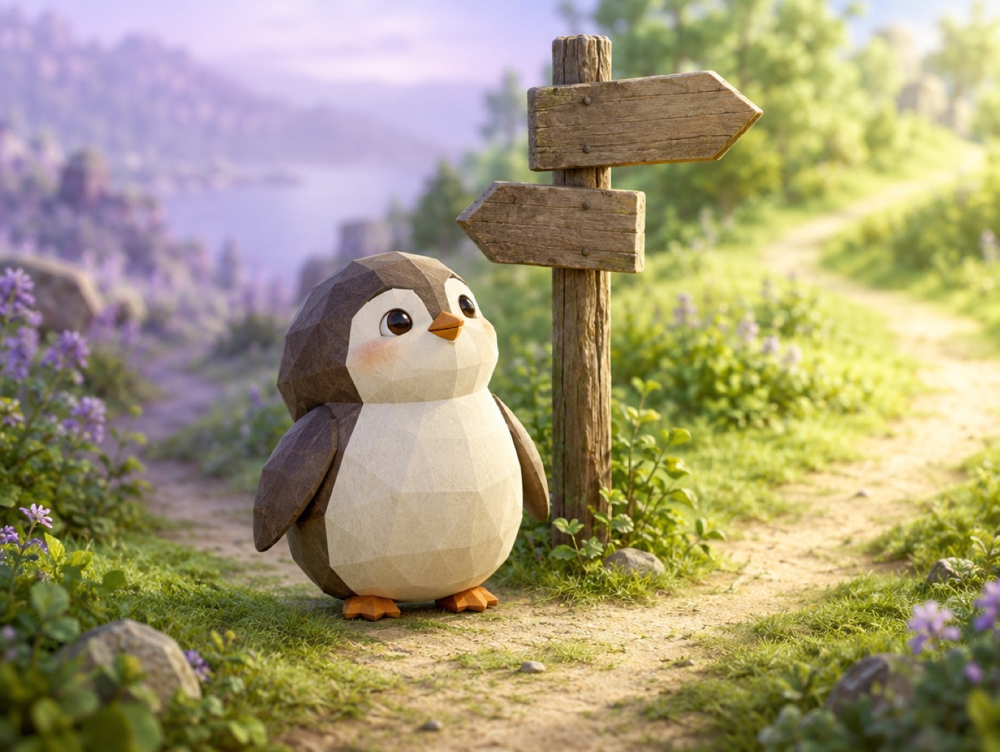

🧪 LAB · 試作 — AIが読書メモから一気に作った記事です。本番の一覧には出していません · 試作の一覧
🐧 EVERYDAY LIFE⚡ 45 SEC
Your personality can change, because the thoughts you use become wide roads 🛣️

Sound Familiar
Do you ever give up on changing, and say, "This is just my personality"?
The Point
But you can change your personality at any age.
The Reason
It is said that less than half of your personality is decided at birth.
Also, the ways of thinking you use often become wider roads in your head, and you start to choose them naturally.
⚡ TRY IT
Build a new road in your brain
Something happens. Pick a thought. The road you use gets wider.
😤 Grumpy road🌱 Tiny trail🌿 Path🛣️ Road🚀 Highway
🌸 Kind road🌱 Tiny trail🌿 Path🛣️ Road🚀 Highway
🤖 Autopilot: your brain takes the 😤 road.🤖 Autopilot: your brain takes the 🌸 road now!
It starts to rain on your day off. ☔
The train is 5 minutes late. 🚃
You drop your ice cream. 🍦
Your favorite cafe is full. ☕
Your hair is sticking up this morning. 🌀
You wake up late on Sunday. ⏰
🌸 Kind thoughts: 0
🎉 Habit switch! The kind road is the wide one now.
For Example
For example, even if you have a habit of thinking "The worst!" on rainy days, if you repeat "It is a good day to read a book," that road gets wider.
Even a thin road at first gets easier to walk if you use it a little every day.
Try This
It is also good practice to act like your favorite anime hero and imagine, "How would that hero think?"
In Short
Your personality changes with small repeats from today.
📚 I wrote this from my reading notes.